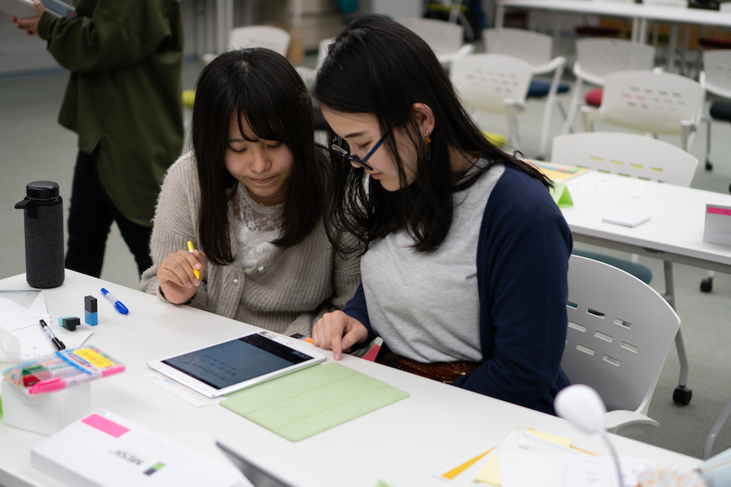
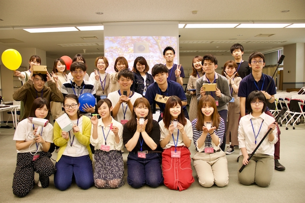
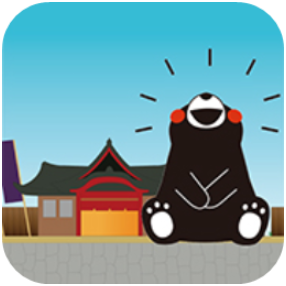
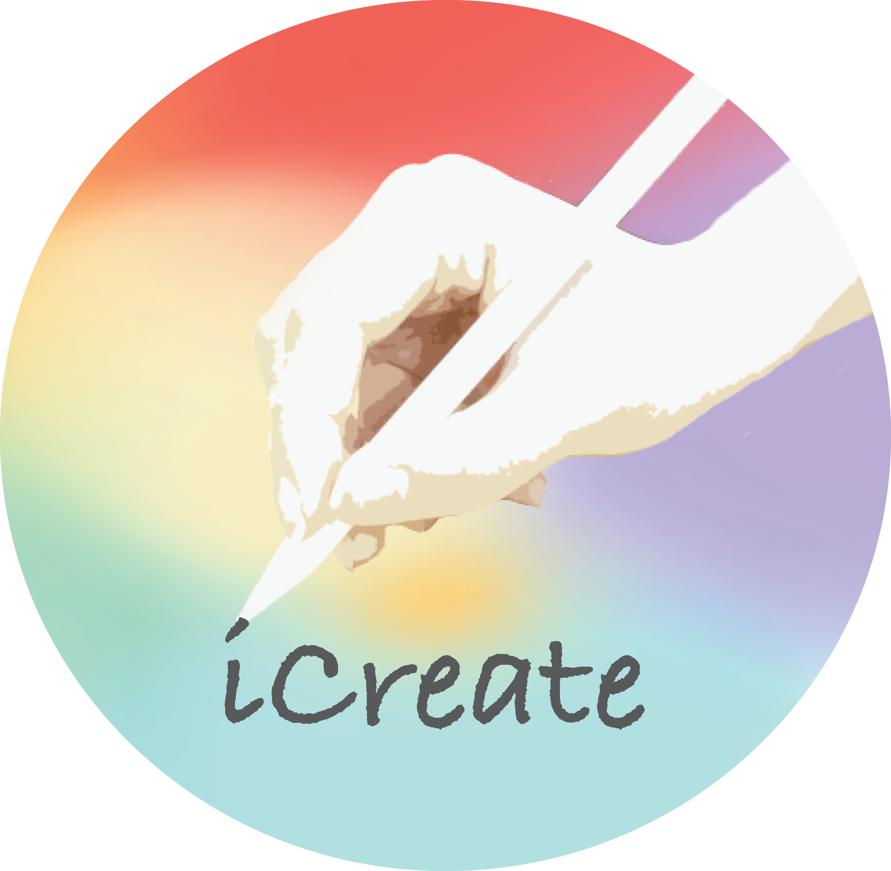

WORKS
研究活動
WORKS
最新の研究活動
Aso Rally
南阿蘇村を活性化することを目的として現在開発中のARアプリです．
南阿蘇村全域を周り，そこに設置してあるポスターにARカメラをかざすことで周辺の観光地のAR動画を見ることができます．
実装は7月を予定しています．南阿蘇村を訪れる際にはぜひご利用ください．

Up To Date
「IoTワークショップ Up To Date〜IoTで日常の困ったを解決しよう！〜」では，日常の課題解決を目的とし，IoTブロックの MESHと日用品を組み合わせて課題解決のツールや仕組みを制作してもらいます．
このワークショップがIoTを用いた身近な課題を解決するための新しい切り口になればと考えています．

Pixpress
「360度映像編集ワークショップ Pixpress」では，360度カメラを使って，オリジナルのシネマグラフやVR映像をAdobeの編集ソフトを用いて制作します．
映像編集を通して，これからの社会で必要とされている創造力を育むことを目的としています．
2017年度の研究活動

やまんぽ
（山鹿市役所様との共同開発）
くまモンと一緒に山鹿豊前街道の7つの施設を巡り山鹿灯籠を完成させるARアプリです．
ARカメラを観光施設にあるマンホールにかざすと山鹿灯籠の部品がもらえ，くまモンによる観光施設の紹介を見ることが出来ます．


iCreate
平成29年度開催「LINEスタンプ制作ワークショップ iCreate〜アイディアをカタチに〜」では，iPadとApple Pencilを用いオリジナルのLINEスタンプを制作しました．
LINEスタンプ制作を通して，社会で必要とされているデジタルデータの扱い方や著作権などについて理解を深めました．